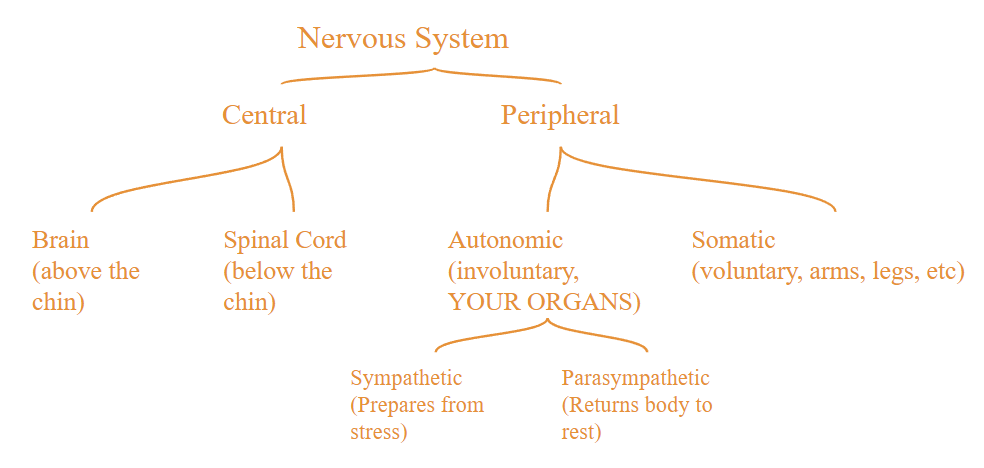

ChurchillDoc Biology 30/30IB Section
Special thanks to Ava Jiang, who without her knowledge this entire page would not have been possible.
What is Biology 30/30IB?
Biology 30 and 30IB are the final course(s) in high school (in Alberta anyway) for biology and requires Biology 20 and 20IB (if you're doing IB obviously).
What's in Biology 30? Because IB is later.
Biology 30 goes over three (3) main subjects; the nervous system, the endocrine system, human reproduction, DNA, cell division, inheritence genetics, and population changes (has math be scared).
The Nervous System
I don't have a joke for some reason...
Functions and Hierarchy
The main functions are to interpret and respond to sensory information, maintain homeostasis or dynamic equilibrium, and allow humans to learn, reason, and experience emotion.
Developer's note: Neither of us have emotion we're IB students.
Hierarchy of the Nervous System

Nerves
Gilial Cells
Non-conducting cells between neurons that nourish and remove waste from the neurons, further split into:
Schwann Cells
Produce myelin, a fatty extension that insulates neurons and speeds up electric signals
Has an outer cytoplasmic layer called the neurilemma, a delicate membrane that contains nerve fibre and promotes regeneration of damaged axons in the peripheral nervous system
Found only in the peripheral nervous system
Wraps around nerves
Oligodendrocytes
Produce myelin but NO neurilemma
Damage to oligodendrocytes disrupts myelin production and can cause permament brain damage
Found only in the central nervous system
Wraps around nerves
Neurons
These are your parts of a neuron:
- Cell body
- Has nucleus, organelles, whatever is in a cell
- Recieves and generates nerve impulse
- Dendrites
- Extensions of cell membrane/cytoplasm
- Conducts cell impulses towards the body
- Looks like a tree
- Axons
- Extensions of cell membrane/cytoplasm that goes away from the body
- Axon terminals
- Ends of axons that convert electric potential energy to chemical signals
- Contains neurotransmitters
- Neurotransmitters
- Chemical messengers released by electric signals that cross the synapse, the space between the nerve cell and the next cell, and bind to receptors in other cells.
- Myelin sheath
- That thing from before
- White fatty lipoprotein sheath that acts as a conductor
- Prevents loss of ions from electric signals
- Wraps around axons
- Is not a continuous sheath, instead having gaps along the length of the axon that allows electric impulses to jump across, which increases signal speeds
- Node of Ranvier
- Regularly occuring gaps between non-conductive Schwann Cells/myelin sheath, which exposes the conductive axon
- Exposed conductive protein channels in the axon allow electric impulses to jump from gap to gap, increasing signal speeds
- End plates
- Flattened terminal junction that connects nerves to muscle fibers
- Releases neurotransmitters into the synapse
Electrochemical Impulse
Context
The membrane potential is the difference in charge between the outside and inside of the nerve membrane.
The resting potential is approximately -70mV.
There are \(Na^+\) ions on the outside that want to move inside, and \(K^+\) ions on the inside that want to move outside.
Sodium and potassium channels in the membrane are responsible for the natural movement of sodium and potassium ions during depolarization and repolarization. A separate sodium-potassium pump is responsible for moving sodium and potassium ions back to their original places using ATP energy during the refractory period.
Process
1. When an impulse arrives, the membrane's permeability changes. The sodium channels open and sodium ions rush into the neuron, which makes the inside of the neuron more positively charged than the outside, changing the potential difference to about +40mV. This step is called depolarization.
2. After 0.2-2.0ms the sodium channels close and the potassium channels open. The potassium ions then rush out of the cell, returning the neuron to its original potential difference of -70mV. The issue at this stage is that the potassium ions are now on the outside while the sodium ions are on the inside, a reverse from Step 1. This is called repolarization.
3. The sodium-potassium pumps uses energy to move potassium ions back out and sodium ions back in to restore the balance. An action potential cannot be started during this period, called the refractory period.
Threshold level
The minimum level of stiumulus required to make a response. It is different for each neuron. Once the level is reached then impulse starts; anything less and there will be no impulse at all, rather than something like a fraction of an impulse.
Synaptic Transmission
Synapse: the tiny space between two neurons (synaptic cleft) or the space between a neuron and a muscle (neuromuscular junction)
Presynaptic neuron: where impulse is coming from
Postsynaptic neuron: where impulse is recieved
Process
1. An impulse travels to the synaptic terminal.
2. Synaptic vesicles move towards and fuse with the presynaptic membrane.
3. Neurotransmitters are released into the synaptic cleft.
4. Neurotransmitters bind to receptor proteins, which signals the sodium channels to open and depolarize.
\[\boxed{\text{Electrical synapse is faster than chemical synapse.}}\]
Neurotransmitters
These are chemical messengers that carry signals across the synapse. They bind to receptor sites on the surface of the postsynaptic neuron.
There are two types of these neurotransmitters.
- Excitatory neurotransmitters
- Signals for \(Na^+\) channels to open and for sodium ions to enter the neuron. Can cause action potential if it exceeds the threshold level.
- Inhibitory neurotransmitters
- Signals for \(K^+\) channels to open and for potassium ions to leave the neuron. Prevents action potential from happening.
Acetylcholine (ACh) (Excitatory)
Acetylcholine is responsible for opening the sodium channels to cuase depolarization. It is also responsible for telling muscles to contract, meaning that it is active in neuromuscular junctions. Leftover neurotransmitters can be recycled via protein channels or endocytosis. Additionally, for ACh specifically, leftover neurotransmitters can be destroyed with the acetylcholinesterase (AChE) enzyme. Failure to destroy or recycle neurotransmitters can, in the case of ACh, cause the muscle to continue to twitch as the signal starter is still there.
Norepinephrine (Excitatory) (Inhibitory)
Norepinephrine is responsible for initiating the fight or flight response. Its excitatory or inhibitory effects depend on which receptors it binds to. Its excitatory effects are associated with wakefulness and alertness, by constricting blood vessels and raising heart rate. Its inhibitory effects include the shutdown of the digestive system.
Gamma-aminobutyric acid (GABA) (Inhibitory)
GABA is the main inhibitory neurotransmitter in the brain. It keeps neurons in an "off" state," or at their resting potential until needed. GABA also helps proritize which information to process first.
Glutamate (Excitatory) (IB specific)
Glutamate opens \(Na^+\) channels in the brain for postsynaptic neurons. It is vital in memory and learning.
Dopamine (Excitatory) (Inhibitory) (IB specific)
Dopamine releases feelings of pleasure via a reward system.
Serotonin (Inhibitory) (IB specific)
Serotonin controls mood, appetite, memory, emotions and sleep. Low levels of serotonin causes anxiety and depression.
Endorphins (Inhibitory) (IB specific)
Endorphins are natural painkillers.
Drugs
Drugs mimick the appearance and function of natural neurotransmitters. Some drugs have similar structures but send altered messages to the brain, some force neurons to release abnormal amounts of neurotransmitters (like dopamine), and some block the neurotransmitters from being cleared and cause the continuous simulation of neurons.
Central Nervous System
Comprised of your brain and spinal cord.
Your CNS has multiple layers of protection. In order from the outermost layer to the innermost components these are:
- Bone
- These are your skull and vertebartes in your spine.
- Meninges
- These are the protective membrane/tissues on the outside of your nerves but inside your bones. Further split into dura amter, arachnoid mater, and pia mater.
- The dura mater is the outermost layer of the meninges. It is leathery and sits underneath the bone.
- The arachnoid mater is the delicate middle layer and contains blood vessels.
- The pia mater is the innermost layer and is the closest of the three to the CNS.
- Cerebrospinal fuild (CSF)
- It is a circulating fluid in the CNS and the meninges, acting as a shock absorber and also transporting waste and nutrients, keeping the CNS clean.
- Blood brain barrier
- A highly selective semipermeable membrane between the blood vessels and brain. It's primary function is to protect against pathogens entering the brain and to allow essential molecules like oxygen through.
Spinal cord
There are 31 sets of nerve entrance points along the length of your spine. It is protected by your vertebrate bones. Not all animals have a spinal cord; the ones that do are called chordates. The spinal cord is split into two sections: dorsal (back) and ventral (front). The dorsal part carries sensory neurons, while the ventral part carries motor neurons. The cell bodies can be found in clusters called ganglia, and is present in the dorsal section in the form of the dorsal root ganglia.
Brain
The parts of the brain (without getting into lobes yet) are:
- Hindbrain
- The very bottom of the brain, connecting it to the spinal cord. It contains the cerebellum, the medulla oblongata, and the pons, all three of which work together.
- The cerebellum is responsible for muslce movement, coordination, and balance.
- The medulla oblongata is responsible for autonomous functions like breathing and heart rate, and organs. It is generally considered the most important out of the three.
- The pons is the bridge between the cerebellum and medulla.
- Midbrain
- This is the top of the pons, connecting the hindbrain to the forebrain.
- Forebrain
- The forebrain is divided into left and right hemispheres. The left is for logic, the right is for artistic. (L and L together) It is made up of the cerebrum and the cerebral cortex.
- The cerebrum is the largest part of the forebrain, containg all of the lobes.
- The cerebral cortex is an outer sheet of neurons on the surface of the cerebrum made up of gray matter.
The reason that the brain has all those fissures is because it is meant to maximize the surface area available for neurons to be on. An increase in surface area means more neurons available to carry out tasks, which increases efficiency and intelligence.
Lobes
Your cerebrum has four main lobes.
- Frontal lobe (directly behind forehead)
- The frontal lobe is responsible for motor control, inhibition, speech (which occurs in the Broca's Area in the left hemisphere), personality, reasoning, and critical thinking.
- Temporal lobe (on the sides, behind the temples)
- The temporal lobe is responsible for hearing, smell (olfactory bulb at the bottom of the brain), memory (hippocampus), emotions (amygdala), and understanding speech (Wernicke's Area).
- Parietal lobe (top and back shelf of the brain)
- The parietal lobe is responsible for touch sensory from the skin, temperature, pain, and taste.
- Occipital lobe (bottom and back shelf of the brain)
- The occipital lobe is responsible for vision and facial recognition.
\[\boxed{\text{Whatever side of the body you are using, the opposite side of the brain is used.}}\]
Additional parts
The corpus callosum is a bundle of nerves that connects the left and right hemispheres and allows for multitasking.
The thalamus is in the very middle and relays sensory information into the lobes.
The hypothalamus is below the thalamus and controls homeostasis, like body temperature and hormones.
The olfactory bulb is at the front and bottom of the brain, right above the nostrils, and it recieves and interprets smell.
Peripheral nervous System (PNS)
Sensory-somatic nerves (external)
These respond to the environment and are mostly under voluntary control. There are 12 carnial and 31 spinal nerves, a total of 43 total "ports."
Autonomic nerves (internal)
These respond to the internal environment, like smooth muscle, the heart, and peristalsis, and are completely involuntary. They are controlled by the medulla oblongata and the hypothalamus.
Sympathetic Nervous System
The sympathetic nervous system is what prepares for stress. The nerves responsible for this system are from the lumbar and thoracic parts of the spine (low middle and middle respectively). Ganglia for this system is found near the spinal cord. The system releases norepinephrine to get energy, which also signals to stop digestion and reproduction, and activates glucose and speeds up the heart.
Parasympathetic Nervous System
The parasympathetic nervous system is what returns the body to rest. The nerves responsible for this system are from the cervical and sacral parts of the spine (very top and very bottom respectively) and the 12 cranial sensory-somatic nerves. In particular, the vagus nerve, which comes out of the medulla and controls the upper body, with its ganglia being found near organs like the liver. Getting punched in the liver hurts a lot because it impacts the vagus nerve. The parasympathetic nervous system releases acetylcholine and nitrous oxide to restart the body.
Effects on organs when active
| Organ | Sympathetic | Parasympathetic |
|---|---|---|
| Heart | Speeds heartrate | Slows heartrate |
| Digestive tract | Decreases peristalsis | Increases peristalsis |
| Liver | Secretes glucose | Secretes bile |
| Eyes | Dilates pupils | Constricts pupils |
| Bladder | Contracts sphincter | Relaxes sphincter |
| Skin | Decreases blood flow (cold hands) | Increases blood flow |
\[\boxed{\text{Somatic division of PNS is in charge of sensory neurons (aka the 5 senses).}}\]
The Senses
Eyes and vision
Images come in to the eye and hit the retina flipped because of the way light travels through your pupils. The occipital lobe processes this image and flips it around across all axises to give you an upright uninverted image.
Here are the parts of your eyes. A (*) means that it is associated with PNS:
- Aqueous humor
- A clear fluid sitting between the iris and the cornea. It keeps pressure on the lens and cornea, delivers nutrients, and removes waste.
- Blind spot (*)
- Location where the optic nerve connects to the eye. There are no rods or cones here.
- Choroid layer
- Contains blood vessels, supplying oxygen and nutrients.
- Ciliary muscle (*)
- Responsible for changing the shape of your eyes' lense for focus
- Iris (*)
- Colored part of your eye surrounding the pupil. It controls the size of the pupil.
- Lens
- Refracts and flips images and focuses light to hit the retina.
- Optic nerve
- Nerve running from the back of the eye to the brain.
- Pupil
- Allows light to enter the eye. It is essentially a gap in your eye.
- Retina (*)
- Captures light and creates an image at the back of your eyes.
- Rods (*)
- Periphery vision, but no color (monochrome). Highly sensitive, as even a single photon will activate it. At night, your peripheral vision percieves the environment better because of the high concentration of rods on the outside of your retina.
- Cones (*)
- Used for color perception. More cones generally means better vision.
- Sclera (*)
- Protects the insides of the eyeball. It is the whites of the eye.
- Vitreous humor
- A clear, gelatinous fluid making up about 80% of the inside of the eyeball and is itself made up of 99% water. It helps maintain pressure on the inside of the eye and on the retina.
Accomodation
Lenses are flexible and change shape in order to focus. To focus on far away objects, the ciliary muscles relax and the lens becomes thin and flat. To focus close, the ciliary muscles contract and the lens becomes fat and round.
Rods
Rods contain a pigment called rhodopsin, a compound made up of retinol (Vitamin A) and opsin (a protein). When functional, rods release inhibitory neurotransmitters to prevent bipolar cells from sending signals to the optic nerve.
When light enters, rhodopsin splits into retinol and opsin. Because of this the rods no longer work and the bipolar cells activate because the inhibitory neurotransmitter is no longer being released. This allows us to see in the dark, albeit in monochrome. It's also why sudden light or darkness hurts, because the separating of opsin from retinol is almost immediate.
Cones
Cones contain a pigment called photopsin (which is less sensitive to light). Each cone is associated with ONE primary color, red, green, or blue (RGB). Most cones are found in the fovea section of the eye, at a small center of the retina. Cones allow for our sharpest and most detailed vision in color, though its effectiveness decreases with age.
Protective layers
Aside from the sclera, eyes also have a dark tissue between the sclera and the retina called the choroid, which is comprised of a dark tissue. The dark tissue absorbs stray light and helps to prevent light from scattering and passing through.
Brain transmission
Humans have binocular vision, which allows us to see 3D and have depth perception, by knowing where two light rays intersect at an object in the environment. (something about physics) The optic chasm is where the nerve tracts cross. The left eye is controlled by the right hemisphere of the brain, and the right eye the left hemisphere.
Eye conditions
All three developers have eye problems don't be like us and stare at a computer all day.
Hyperopia (farsighted)
The eyeball is too short, the lens is too flat, and the eye gets locked into focusing on far objects. The focal point becomes behind the retina. This is fixed with a convex lens.
Myopia (nearsighted) (what all the devs have)
The eyeball is too long and the lens is too spherical and the eye gets locked into focusing on near objects. The focal point becomes in front of the retina. This is fixed with a concave lens.
Astigmatism (the dev writing this has it)
Astigmatism causes individual irregularities in the curvature of the lens or cornea, separate from the other eye, causing portions of vision to be blurry. This is fixed with lenses that are different for each eye.
Ears and hearing
Let's look at the parts of the ear first.
Outer ear
The outer ear collects and funnel sound waves with its ridges and folds. The three parts you need to know are the pinna (the meaty ridge on the outside of your ear), the auditory canal (on the inside), and the tympanum or eardrum, which converts sound waves to mechanical energy.
Middle ear
The middle ear amplifies sound waves in the ossicles. It is made up of:
- Malleus (hammer)
- A hammer shaped bone.
- Incus (anvil)
- An anvil shaped bone.
- Stapes (stirrup)
- A stirrup (yes the one used for horses) shaped bone. It hits the small oval window.
- Oval window
- A thin membrane that transmits vibrations from the stapes to the fluid in the inner ear.
- Round window
- Connected to the uestachian tube and maintains air pocket pressure. If the oval window is pushed in, then the round window is pushed out. Intense pressure can overwhelm this balance and cause a ruptured ear.
Inner ear
The parts of your inner ear are:
- Vestibule
- Maintains equilibrium, physical balance, and spatial orientation. If you lose your balance it's this thing's fault.
- Semicircular canals
- Sensors for rotational movement and physical balance.
- Cochlea
- A fluid filled, snail shaped chamber that converts mechanical energy into electrical signals to send to the brain. It has three chambers. The fluid is called enclolypmh.
- Organ of Corti
- The functional part of the cochlea. It has two membranes to make a chamber.
- Mechanoreceptors (stereocilia hairs)
- These are specialized sensory receptors that in this case bend as the fluid vibrates the lower basilar membrane. In the same way the oval and round windows work, this movement puts pressure against the upper tectorial membrane. The hair mvovements then trigger action potential in sensory neurons.
Volume (amplitude)
Loud noise, meaning a high amplitude, puts more pressure on the stereocilia. Repeated pressure will destroy the stereocilia, which causes hearing loss.
In connection, a hearing aid is a device that either amplifies the incoming sound or reduces background noises. A cochlear implant is another device that instead sends electrochemical impulse directly to the auditory nerve, bypassing the middle and inner ears.
Pitch (frequency)
High frequency or energy sounds will vibrate close to the oval window, where the basilar membrane is stiff and the maximum oscillation period is short. And vice versa, low frequency sounds will vibrate farther down the basilar membrane away from the oval window, where it is wide and flexible, and the maximum oscillation period is much greater.
Vestibule (proprioceptors)
The vestibule is responsible for static equilibrium, which is the body's ability to balance while staying still. Contains the utricle and saccule, otolith organs that contain otoconia, calcium carbonate \(CaCO_3\) rocks that move with gravity and bend and pull cilia to stimulate the vestibular nerve and give the thalamus information on your balance. The utricle is responsible for left-right and up-down tilt movements, while the saccule is responsible for vertical movements, or movements relative to gravity.
Semi-circular canals
The semi-circular canals are responsible for dynamic equilibrium, which is the body's ability to balance while moving. Three canals that are connected to the utricle, each orientated to loop in the 3 different axis of our 3 dimensional world. There are two parts to each canal: the ampulla and the cupula. The ampulla is a pocket at the ends of the canal. The cupula is the jelly sac, or the canal itself, that contains cilia. Movement of the head moves endolymph around in the canals, which then triggers the cilia and causes action potential.
The Endocrine System
Here is the vocabulary you need to know:
- Positive feedback loop
- The effect is amplified and continued
- Negative feedback loop
- A disruption from a specific set point is noticed and restored
- Secrete
- To release a hormone
- Suppress
- To decrease function and inhibit
- Stimulate
- To increase function
- Hypo- prefix
- Less of something
- Hyper- prefix
- More of something
Hormones
These are chemical regulators that are produced in glands and then target other parts of the body. There are three types of hormones by function:
- Non-target hormone
- Targets MANY cells in the body (e.g insulin)
- Target hormone
- Targets SPECIFIC cell type (e.g gastrin targetting stomach)
- Tropic hormone
- A hormone that stimulates another gland
- Antagonistic hormone
- A relationship between two hormones that have opposite functions
In addition, there are two types of hormones by structure:
- Water soluble hormone (proteins)
- These bind to receptors outside the target cell and signal transduction pathways.
- Fat soluble hormones (steroids)
- These diffuse into the plasma membrane of the target cell.
Glands
Glands are the sites of the body that secrete hormones. There are two types of glands:
- Exocrine
- The products of the gland leaves the body (e.g saliva or sweat)
- Endocrine
- The products of the gland go into the bloodstream (e.g hormones)
Pituitary gland
The pitiuitary gland is a small sac-like structure of the brain that connects directly and is controlled by the hypothalamus. It controls the activity of other glands by releasing tropic hormones. It is made up of the posterior pituitary and the anterior pituitary.
Posterior pituitary (small and at the back)
Posterior pituitary hormones are made in the hypothalamus by special neurons and sent down by axons and then stored in the posterior pituitary itself until the brain gives a signal for its release. The two hormones stored here are the anti-diuretic hormone (ADH), which balances the body's water level by communicating with the kidneys, and oxytocin, which affects the uterus and mammary glands. Both are made in the hypothalamus but stored in the posterier pituitary.
Anterior pituitary (large and in the front)
The anterior pituitary makes its own hormones. Their release is signalled by other hormones sent from the hypothalamus. There are six (6) hormones stored in the anterior pituitary gland, being:
- Thyroid simulating hormone (TSH) for your thyroids
- Adrenocorticotropic hormone (ACTH) for your adneral glands
- Human growth hormone (HGH) for most of your cells
- Follicle stimulating hormone (FSH) for ovaries and testes
- Luteinizing hormone (LH) for ovaries and testes
- Prolactin (PRL) for mammary glands
Blood glucose levels
Glucose levels are controlled by the pancreas and adrenal glands. In the pancreas, these are called the Islets of Langerhans, clusters of specialized endocrine cells spread out throught the pancreas.
High blood sugar (hyperglycemia)
When you have high blood sugar, specialized cells called Beta-cells, or just B-cells, in the Islets of Langerhans produce insulin to lower the sugar concentration. It stiumlates liver cells to take in glucose and convert it into glucagon and tells cells to convert glucose into adipose tissue (fat) and to use glucose for cellular respiration. Insulin and glucagon are antagonistic hormones; insuline lowers blood sugar levels by telling cells to absorb glucose, while glucagon raises blood sugar levels by telling the liver to release stored glucose.
Low blood sugar (hypoglycemia)
When you have low blood sugar, specialized cells called Alpha-cells, or just a-cells, in the Islets of Langerhans release the glucagon hormone to increase the sugar concentration. It tells liver cells to break down glycegen, a form of storage of glucose, and to release it into the body, as well as telling adipose tissue to break down stored fat.
Thyroid gland
The thyroid gland controls the rate that glucose oxidizes. It is located at the front of the neck, at the base of the trachea. It produces T3 and T4, or thyroxine, to control metabolism.
Low metabolic rate
The hypothalamus signals the anterior pituitary with the thyrotrepin releasing hormone (TRH), which causes the pituitary to release the thyroid stimulating hormone (TSH), which tells the thyroid to release T3 and T4, which increases metabolism and fixes the problem.
- Hyperthyroidism
- High secretion of thryoid hormones, high metabolism, causes weight loss
- Hpothyroidism
- Low secretion of thyroid hormones, low metabolism, causes weight gain
Parathryoid glands
These are four (4) small glands (dots, really) attached to the thyroid. They regulate the calcium and phosphoros levels in your body.
Low blood calcium levels
When this happens the parathryoids release the parathryoid hormone (PTH). It triggers an increase in blood calcium by releasing calcium from the bones into the bloodstream and by increasing the absorption of calcium in your kidneys, rather than letting it leave the body in urine.
Hypoparathyroidism
This occurs when PTH is inhibited. It means that no calcium is secreted into the blood, which also means that the bone concentration doesn't change, which causes joint pain, muscle weakness, and twitching. Fun stuff.
Human growth hormone (HGH)
The human growth hormone is produced in the anterior pituitary. It alters the growth of long bones and metabolism. It also stimulates the liver to secrete other growth factors.
Giganticism (Yao Ming or something)
Hypersecretion of HGH before growth plates close.
Acromegaly
Hypersecretion of HGH during adulthood. It cases abnormal bone growth in certain body parts.
Dwarfism
Hyposecretion of HGH during childhood. I think it's pretty obvious what it does.
Water balance
Osmoreceptors in the brain notice low blood pressure, the hypothalamus stimulates the posterior pituitary to release the antidiuretic hormone (ADH), which causes the kidneys to reabsorb more water before it leaves the body. The water enters the bloodstream, dilutes the blood, and the osmoreceptors upon detecting this tell the hypothalamus to inhibit ADH.
Adrenal gland (stress)
The adrenal gland is found in the kidneys.
Adrenal medulla
This is one of the parts of the adrenal gland. It is responsible for regulating short term response, usually immediate because it is a part of the autonomic nervous system (ANS). It responds to sympathetic nerves, not hormones. The medulla will secrete epinephrine or norepinprhine, which increase breathing rate, heart rate, blood sugar (in the same process of converting glycogen into glucose), and blood pressure.
Adrenal cortex
This is another part of the adrenal gland. It is responsible for regulating long term stress response. It is controlled by the adrenocoricotropic hormone (ACTH) from the anterior pituitary. The adrenal cortex releases three main types of hormones:
- Glucocorticoids
- These raise blood sugar and suppress the immune system by increasing the production of anti-inflammatory proteins while blocking pro-inflammatory chemicals. A common example is cortisol.
- Mineralcorticoids
- These increase the reabsorption of sodium ions, \(Na^+\), in the kidneys. A common example is aldosterene.
- Gonadotropins
- These are produced in the adrenal cortex by both sexes. Two common examples are testosterone (male) and estrogen (female).
Leptin (IB)
Leptin is produced by adipose tissue (fat). It targets your appetite via the hypothalamus. The more fat is stored in the adipose tissue, the more the leptin, and the more it inhibits appetite.
People with obesity have a higher level of leptin circulating in their bloodstream, and their body no logner responds to the hormone, meaning their appetite is less inhibited. This is something that develops with age.
Melatonin (eepy drug) (IB)
Melatonin is produced in the pineal gland and is used to regulate your circadian rhythm. Its production peaks at around 2:00-4:00 for better sleep.
Jet lag is a physiological condition from changing timezones, occuring because the pineal gland still secretes melatonin at the old time zone, even if it's not night time in the new.
Thermal regulation
This is the maintanence of the core body temperature against fluctuations; essentialy the equivalent of dynamic equilibrium of balance. The hypothalamus is the central information integration organ involved. It always uses a negative feedback loop.
Blood and heat
Blood travels from the organs to the skin where its energy (heat) radiates off into the environment.
- Vasodilation
- The blood vessels on the surface of the skin dilate and expand, increasing the surface area between them and the environment and thus providing more area for heat to be exchanged.
- Vasoconstriction
- The blood vessels on the surface of the skin constrict and shrink, decreasing the surface area between them and the environment and thus decreasing the area from which heat can be exchanged. Vasoconstriction also lowers the heart rate as less blood can be pumped per unit volume due to the smaller size of the blood vessels.
Shivering
Shivering is an involuntary reflex (yeah good luck trying to stop shivering trust me I've tried) when the temperature drops. Because the body needs energy, the muscles rapidly expand and contract to release energy.
Sweating
Sweat glands release liquid, mostly water, to cool the body down. The water transitioning from liquid form (sweat) into vapor (just vapor) takes up a large amount of body heat, which cools the skin and core temperature. This is known as evaporative cooling.
Uncoupled respiration
Brown adipose tissue, a specialized fat that burns energy to generate heat, becomes activated, which helps to regulate core temperature. Uncoupled respiration occurs ONLY when the body has no energy left, and it pulls the energy away from ATP production into heating up the body.
Piloerection
Goosebumps and hair on the skin stands up, which helps to trap air and prevent convection from replacing the warm air (caused by the skin's heat exchanging with the air above the skin's) with cold air from elsewhere in the environment because of energy gradients.
Human Reproduction
Which one of you giggled I heard that.